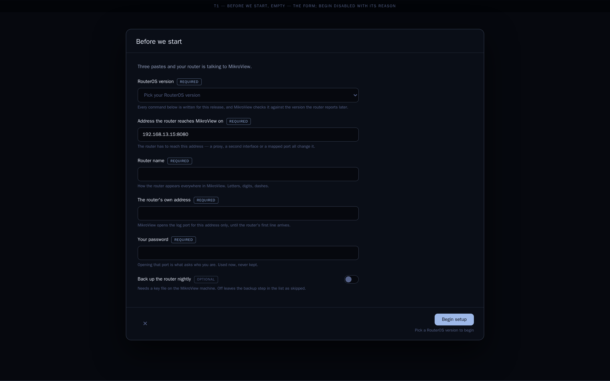
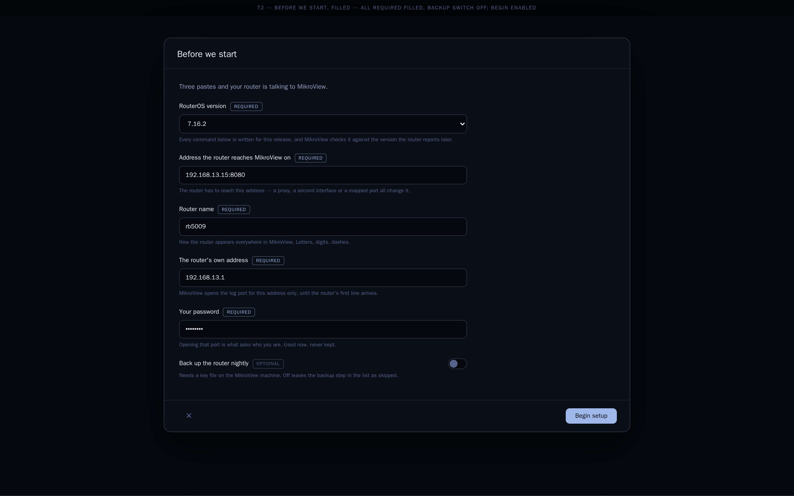
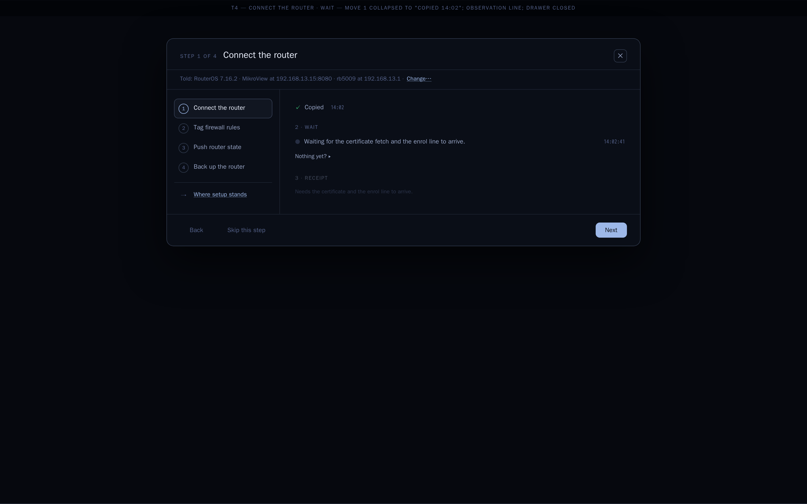
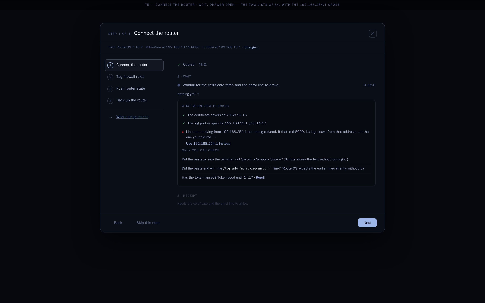
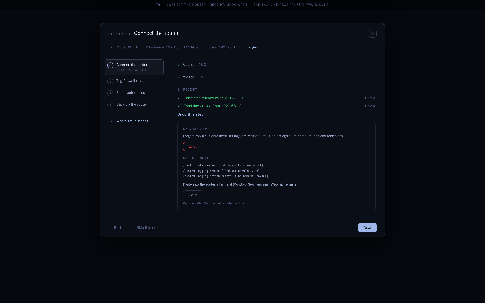
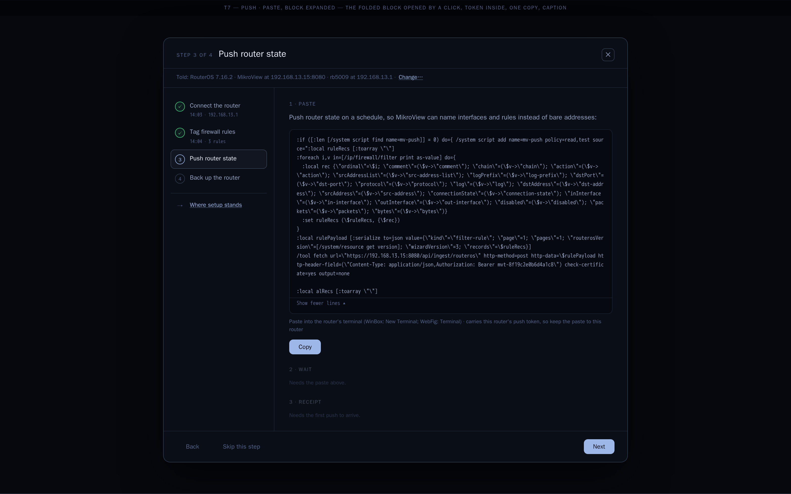
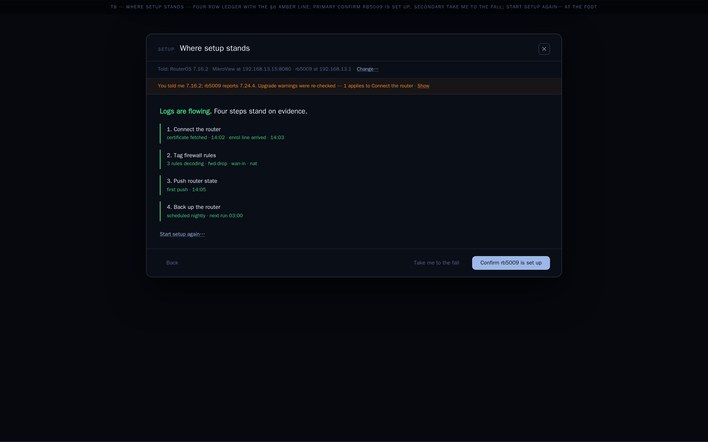
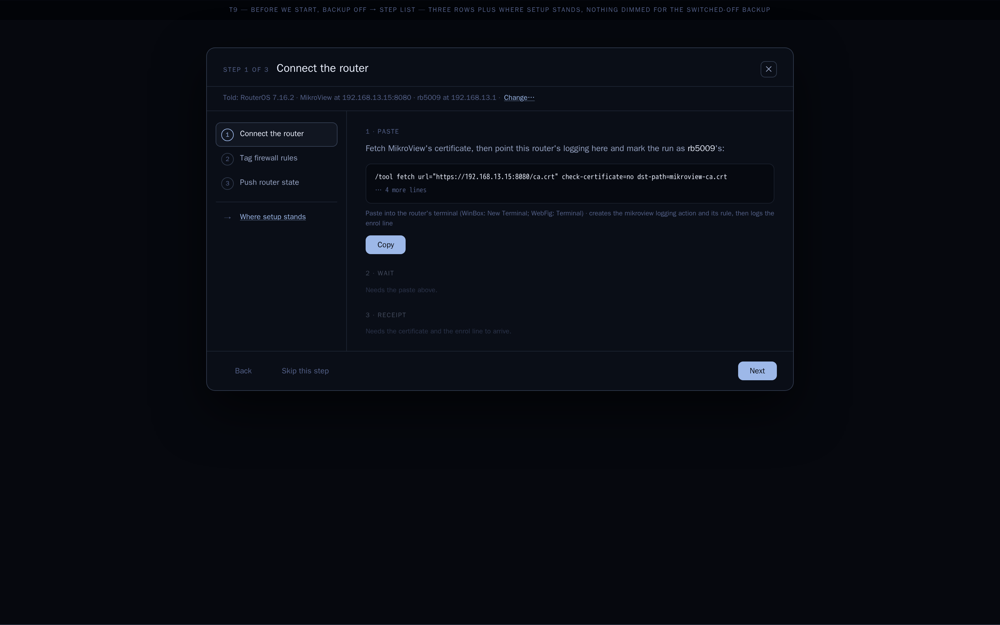

u1Before we start, empty
the form; Begin disabled with its reason
Dropped 2026-09-26 — owner: "extremely underwhelming, lack creativity and have zero ambition". See round-5.
Gated version pick, one form up front, the told strip, three-move steps, and the lighter visual weight of §8 — drawn as two directions on the same nine-scene story: T keeps the 940px modal, U redraws the frame as a full-screen guided flow. See README.md for the full spec and owner rulings.

the form; Begin disabled with its reason

all Required filled, backup switch off; Begin enabled
told strip; slim rail of §8 (four rows); move 1 open with the block folded and Copy primary; moves 2–3 dimmed

move 1 collapsed to "Copied 14:02"; observation line; drawer closed

the two lists of §4, with the 192.168.254.1 cross

the two-line receipt; §5's two blocks

the folded block opened by a click, token inside, one Copy, caption

four-row ledger with the §6 amber line; primary Confirm rb5009 is set up, secondary Take me to the fall; Start setup again… at the foot

the step list as it first appears after Begin: three rows plus Where setup stands, nothing dimmed for the switched-off backup
Open direction-u-wizard.html — same nine scenes, same story; no modal, no side step list, a top progress rail and a centred ~600px column.
the form; Begin disabled with its reason

all Required filled, backup switch off; Begin enabled

told strip; progress rail; move open with the block folded and Copy primary

the wait screen: large observation line, pulsing dot; drawer closed

the two lists of §4, with the 192.168.254.1 cross

the two-line receipt; §5's two blocks

the folded block opened by a click, token inside, one Copy, caption

four-row ledger with the §6 amber line; primary Confirm rb5009 is set up, secondary Take me to the fall; Start setup again… at the foot

the rail as it first appears after Begin: five items, nothing dimmed for the switched-off backup